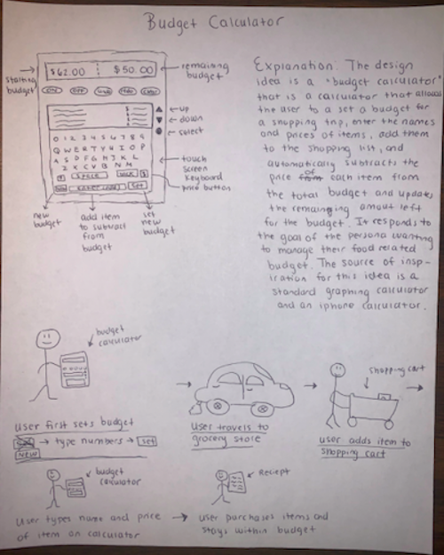
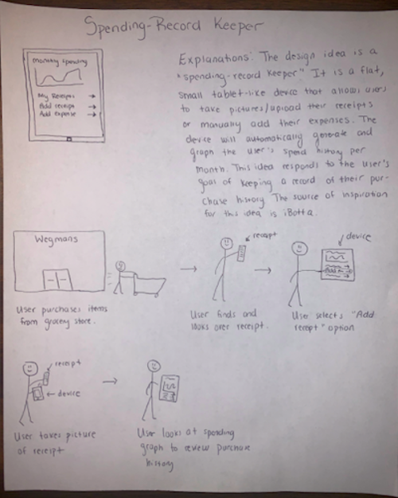
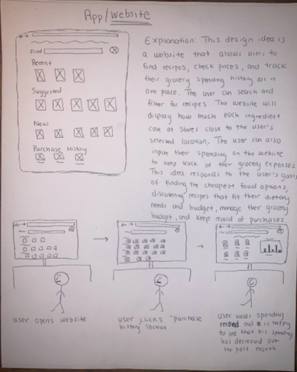
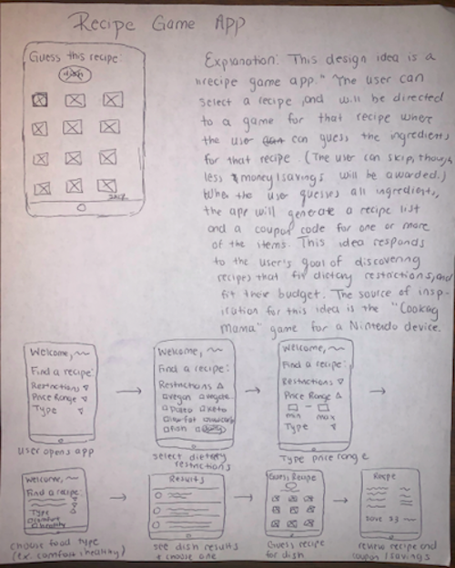
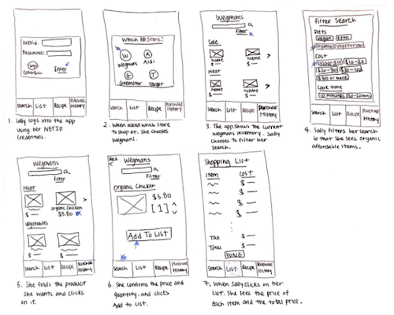
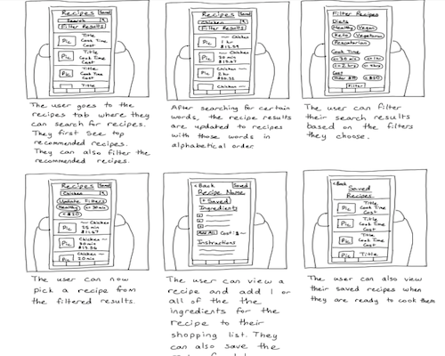
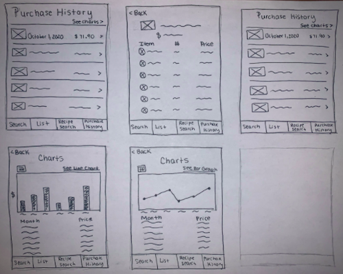

Background
Resulting from the coronavirus, many Cornell University students have lost a source of income, live in a household where at least one source of income has been lost, or have endured unfavorable, monetary-related consequences as a result of the pandemic. Due to restricted accessibility to money, various college students now have to begin considering or increasing their consideration of money in making causal and future decisions, especially regarding grocery shopping.
User Research Findings
Trends:
- Students have decreased their amount of take-out and dine-out orders since the beginning of the pandemic.
- Food options are more limited due to the pandemic.
- Student’s source of income has decreased.
- Students are more conscious of the spending due to financial hardship resulting from the pandemic.
Insights:
- Students are concerned with indoor dining due to the coronavirus.
- Take-out orders is a last resort and utilized when students have minimal time available.
- Interviewees repeatedly eat the same meals.
- Students consistently buy the same grocery items to minimize spending.
- Students have a stronger desire to track their spending and choose cheaper alternatives to spend less money.
User Goals and Motivations
Functional Requirements:
- Allow the user to view the most affordable/cheapest food item options available.
- Help the user discover recipes that fit their dietary preferences/restrictions.
- Help the user discover recipes that fit their budget.
- Help the user save time in the kitchen.
- Help the user manage their food-related budget.
- Help users keep a record of their purchase history.
Contextual Requirements:
- Intuitive & aesthetically pleasing design/ user interface
- Secure (keep private - financial - information safe)
- Sync with inventory of grocery stores in proximity (~10 miles)
- Free to use for Cornell students
- User is able to save information that can be used when not connected to wifi to avoid using phone data
- Portable
Brainstorming




Approaches



Solution
The chosen solution is a mobile app that allows users to manage their grocery shopping experience by allowing them to:
- discover recipes
- view cheapest grocery item alternatives to reduce overall spending
- create grocery lists
- track purchase history